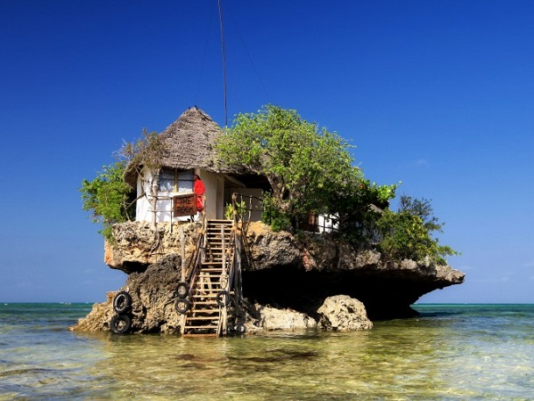
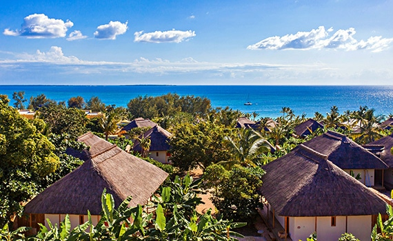

|  |
Ses restaurants
Surnommée « l'île aux épices », Zanzibar est située au large de la côte nord de la Tanzanie. Depuis des siècles, on vient y chercher des clous de girofle. Son port a été l'un des plus importants comptoirs d'Afrique. Il a été conquis par quasiment toutes les grandes civilisations exploratrices de l'humanité, des Assyriens aux Britanniques, en passant par les Chinois et les Portugais. Avec ses petites ruelles sinueuses, ses bazars, ses échoppes, ses mosquées et ses palais majestueux, la vieille ville aux mille senteurs constitue l'un des endroits les plus fascinants de l'île. Zanzibar... Rien que son nom fait rêver. Surnommée « l'île aux épices », elle s'illustre au large de la côte nord de la Tanzanie, et vous enivrera de mille senteurs. Depuis des siècles, on vient y chercher des clous de girofle ! Son port a été l'un des plus importants comptoirs d'Afrique et la ville a été conquise par quasiment toutes les grandes civilisations exploratrices de l'humanité : des Assyriens aux Britanniques, en passant par les chinois et les portugais. Visitez sa vieille ville, l'un des endroits les plus fascinants de l'île et plongez vous dans ses petites ruelles sinueuses pour découvrir ses bazar, échoppes, mosquées et palais majestueux...Mais surtout n'oubliez pas de vous laisser envahir par la magie des lieux... |
|  |
Les bungalows
Le nom de Zanzibar a été donné au Moyen Âge par les navigateurs perses qui désignaient sous le vocable de Zangibar ou Zanğibar, signifiant « la terre des noirs » (de zang ou zanğ, « noirs », et bar, « terre », « pays ») en vieux perse, la région côtière de l'Afrique orientale dont l'archipel de Zanzibar. Ce sont les Portugais qui, lors de leurs pérégrinations autour de l'Afrique au XVe et XVIe siècles, feront connaître l'archipel sous son nom actuel, puisqu'il s'agit d'une transcription en portugais du nom arabe (forme attestée chez Duarte Barbosa en 1516). Durant l'antiquité, l'archipel était connu sous les noms de Tangenae chez Pline l'Ancien, Azania chez Ptolémée et Zingion chez Cosmas Indicopleustès, ces noms étant tous empruntés aux arabes, particulièrement aux langues sudarabiques (notamment la langue sabéenne du Royaume de Saba dont l'archipel aurait été une possession selon la légende) |